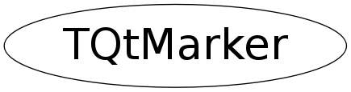

Function Members (Methods)
public:
| TQtMarker(const TQtMarker& m) | |
| TQtMarker(const TAttMarker&) | |
| TQtMarker(int n = 0, TPoint* xy = 0, int type = 0) | |
| virtual | ~TQtMarker() |
| static TClass* | Class() |
| void | DrawPolyMarker(QPainter& p, int n, TPoint* xy) |
| Color_t | GetColor() const |
| const QPolygon& | GetNodes() const |
| int | GetNumber() const |
| int | GetType() const |
| int | GetWidth() const |
| virtual TClass* | IsA() const |
| TQtMarker& | operator=(const TQtMarker& m) |
| TQtMarker& | operator=(const TAttMarker&) |
| void | SetColor(Color_t mcolor) |
| void | SetMarker(int n, TPoint* xy, int type) |
| void | SetMarkerAttributes(const TAttMarker& markerAttributes) |
| void | SetPenAttributes(int type) |
| virtual void | ShowMembers(TMemberInspector& insp) |
| virtual void | Streamer(TBuffer& b) |
| void | StreamerNVirtual(TBuffer& b) |
Data Members
private:
| QPolygon | fChain | array of the n chains to build a shaped marker |
| Color_t | fCindex | Color index of the marker; |
| int | fLineOption | Connect the markers with the segments |
| int | fLineWidth | The width of the line used to outline the markers |
| int | fMarkerType | Type of the current marker |
| int | fNumNode | Number of chain in the marker shape |
Class Charts
{kind=link}
{kind=link}
{kind=link}
{kind=link}

Function documentation
void SetMarkerAttributes(const TAttMarker& markerAttributes)
Map Qt marker attributes to ROOT TAttMaker parameters
void DrawPolyMarker(QPainter& p, int n, TPoint* xy)
Draw n markers with the current attributes at positions xy. p : the external QPainter n : number of markers to draw xy : x,y coordinates of markers